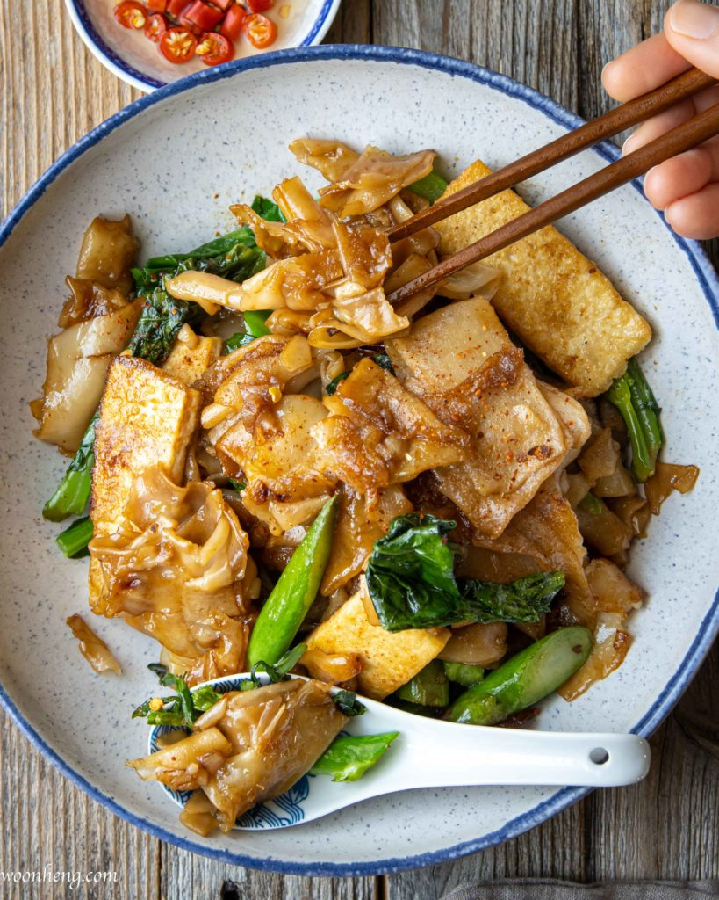

Pad See Ew

Description:
One of my favorite dishes for dinner is the Thai comfort food Pad See Ew.
Pad See Ew is a Thai street food made with wide rice noodles coated in a rich, savory, slightly sweet brown sauce.
This variation on the dish will be vegetarian and made with tofu, but you can use for your favorite protein.
Ingredients:
- 1 lbs flat rice noodles store bought
- 4 oz firm tofu
- 1 tablespoon neutral oil, such as canola
- 3 garlic cloves, minced
- 1 cup roughly chopped gai lan (Chinese broccoli)
- 2½ tablespoons soy sauce, plus more to taste
- 1 tablespoon fish sauce, plus more to taste
- 2 teaspoons granulated sugar
- ½ teaspoon dark soy sauce
- Red pepper flakes, for serving